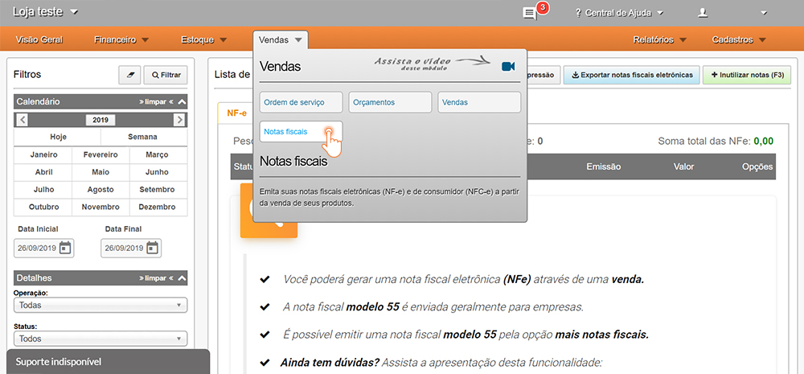
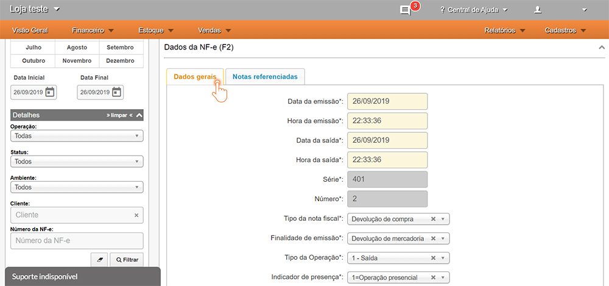
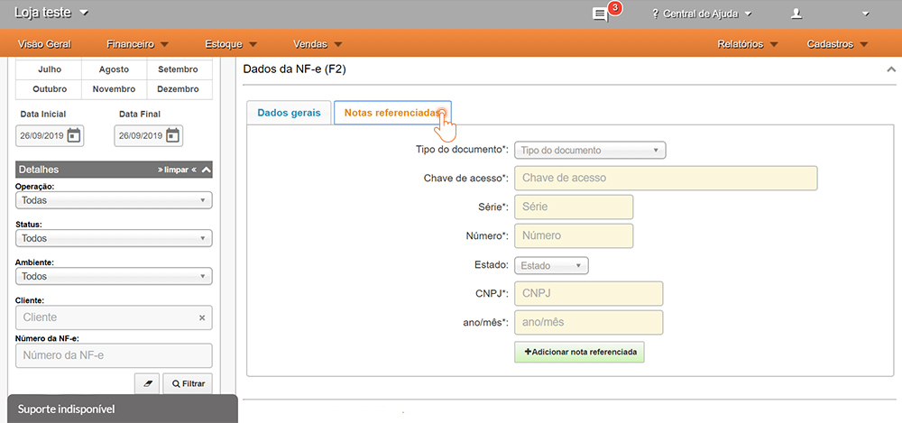
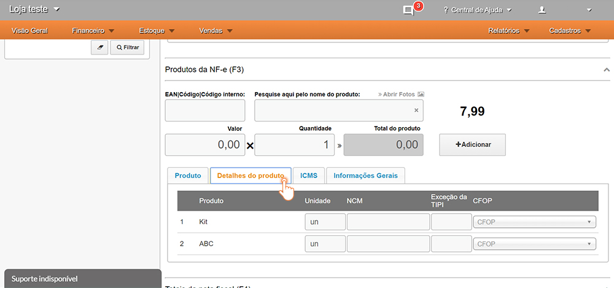
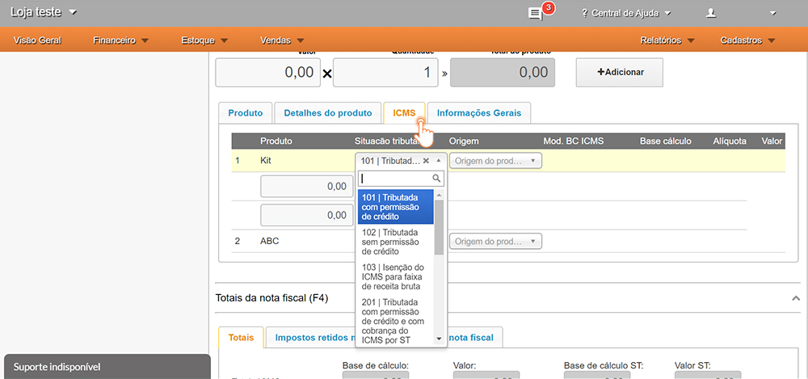
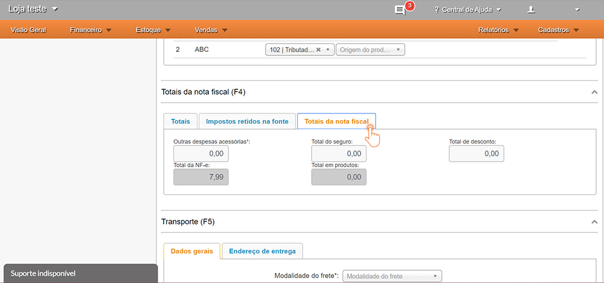

A nota fiscal de devolução tem o objetivo de anular uma nota de compra ou venda emitida, ou seja, quando a empresa quer devolver um produto ao fornecedor ou o cliente quer devolver um produto que comprou é preciso emitir uma nota de devolução para tirar esse produto do estoque ou anular o valor que seria cobrado de imposto pela nota de venda.
A responsabilidade pela emissão da nota de devolução é sempre da empresa que comprou o produto, ou seja, do destinatário da nota de entrada. Porém, caso o comprador seja pessoa física, a responsabilidade pela emissão fica a cargo do emitente.
Quando emitir nota de devolução?
Deve ser emitido nota fiscal de devolução quando o cliente desejar devolver o produto ou quando uma nota fiscal não foi cancelada no prazo legal de até 24 horas, neste caso é emitido uma nota de devolução para anulá-la.
Como emitir uma nota de devolução?
Para emitir uma nota de devolução é necessário:
- Utilizar um CFOP de devolução, de acordo com cada caso;
Alterar a finalidade da nota para Devolução de Mercadoria;
Referenciar a nota fiscal que está devolvendo;
- Emitir a nota com todas as informações (valores, tributos, etc), iguais a nota de entrada.
CFOP utilizados
Abaixo segue tabela com os CFOP mais utilizados pelas empresas.
CFOP de entrada
Utilizado quando o destinatário está impossibilitado de emitir nota de devolução. Neste caso, quem emite a nota é o fornecedor.
1.000: Utilizado quando a compra/venda for efetuada dentro do Estado do fornecedor
2.000: Utilizado quando a compra/venda for efetuada fora do Estado do fornecedor
3.000: Utilizado quando a compra/venda for efetuada no exterior
| CFOP (entrada) | APLICAÇÃO |
|---|---|
| 1.201 | 2.201 | 3.201 | Devolução de produção do estabelecimento |
| 1.202 | 2.202 | 3.202 | Devolução de mercadorias de terceiros |
| 1.660 | 1.661 | 1.662 | 2.660 | 2.661 | 2.662 | 3.660 | 3.661 | 3.662 | Devolução referente à combustíveis |
| 1.918 | 1.919 | 2.918 | 2.919 | Devolução referente à consignação |
CFOP de saída
5.000: Utilizado quando a compra/venda for efetuada dentro do Estado do fornecedor
6.000: Utilizado quando a compra/venda for efetuada fora do Estado do fornecedor
7.000: Utilizado quando a compra/venda for efetuada no exterior
Para verificar todas os CFOP com suas descrições completas acesse o site com os códigos fiscais. Caso ainda tenha dúvidas referente a qual usar, procure um contador para auxiliá-lo.
| CFOP (entrada) | APLICAÇÃO |
|---|---|
| 5.200 | 6.200 | 7.200 | Devolução de compras de industrialização, comercialização ou anulação |
| 5.201 | 5.208 | 6.201 | 6.208 | 7.201 | Devolução de industrialização ou produção rural |
| 5.202 | 6.202 | 7.202 | Devolução de mercadoria para comercialização |
| 5.410 | 5.411 | 5.412 | 5.413 | 6.410 | 6.411 | 6.412 | 6.413 | Devolução com mercadoria sujeita a substituição tributária |
| 5.210 | 6.210 | 7.210 | Devolução de mercadoria para utilização na prestação de serviços |
| 5.660 | 5.661 | 5.662 | 6.660 | 6.661 | 6.662 | Devolução referente à combustíveis |
| 5.918 | 5.919 | 6.918 | 6.919 | Devolução referente à consignação |
Como emitir uma Nota Fiscal de Devolução pelo Sistema GranMoney
Para que não haja dúvidas na hora de emitir uma nota de devolução pelo sistema da GranMoney, preparamos um passo-a-passo para auxiliá-lo:
No menu incial, acessar opção Vendas > Notas Fiscais.
É possível realizar dois tipos de notas de devolução
Devolução de venda: devolve produtos de uma nota fiscal de venda. Nesta modalidade, ocorre a devolução de seu estabelecimento para um de seus clientes. Nesta caso, deve-se selecionar a opção Mais notas > Nota de devolução de compra.
Devolução de compra: devolve produtos de uma nota fiscal de compra. Nesta modalidade, são devolvidos produtos comprados de um de seus fornecedores. Nesta caso, deve-se selecionar a opção Mais notas > Nota de devolução de compra.
Preencher os dados iniciais da nota.
Informar os dados gerais dessa NF, como número, série, o tipo e finalidade da nota fiscal (Devolução de compra), operação de saída caso seja devolução de mercadorias para o fornecedor ou entrada quando for devolução de cliente, com operação não presencial, entre outros, conforme exemplo abaixo.
Referenciar a nota de entrada
Preencher a Nota fiscal referenciada, ou seja, a chave de acesso da nota original de compra emitida por seu fornecedor, na qual vão constar os produtos a serem devolvidos.
Informar os produtos e quantidades a serem devolvidos.
É importante informar corretamente os detalhes do produto, como NCM (deve ser o original da NF de compra), também informar um CFOP de devolução como o 5202, conforme exemplo. Vale lembrar que a NF pode ser devolvida parcialmente ou integralmente.
Preencher o valor do ICMS informado na nota de entrada
Na aba ICMS do produto, para destacar este imposto, caso seja um produto comprado de um fornecedor do regime normal (lucro presumido ou real), informar a ST 900 (Outros) e o Valor da Operação, que no caso seria a Base de cálculo do produto (valor total daquele item) e a alíquota do ICMS informada por seu fornecedor.
Preencher o valor total da nota fiscal
Para outros valores da NF, como o valor total do IPI ou ICMS ST devem ser informados na seção de Totais da nota fiscal, no campo Outras despesas acessórias.
Por fim, deve-se preencher a modalidade do frete da NF

Lembre-se de conferir novamente todos os detalhes desta emissão para não precisar cancelar e refazer todo o processo. Caso tenha alguma dúvida em relação aos tributos da nota, entre em contato com seu contador para auxiliá-lo nesta questão.